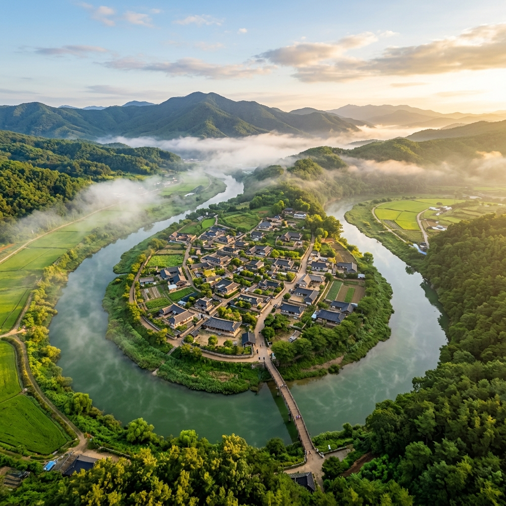
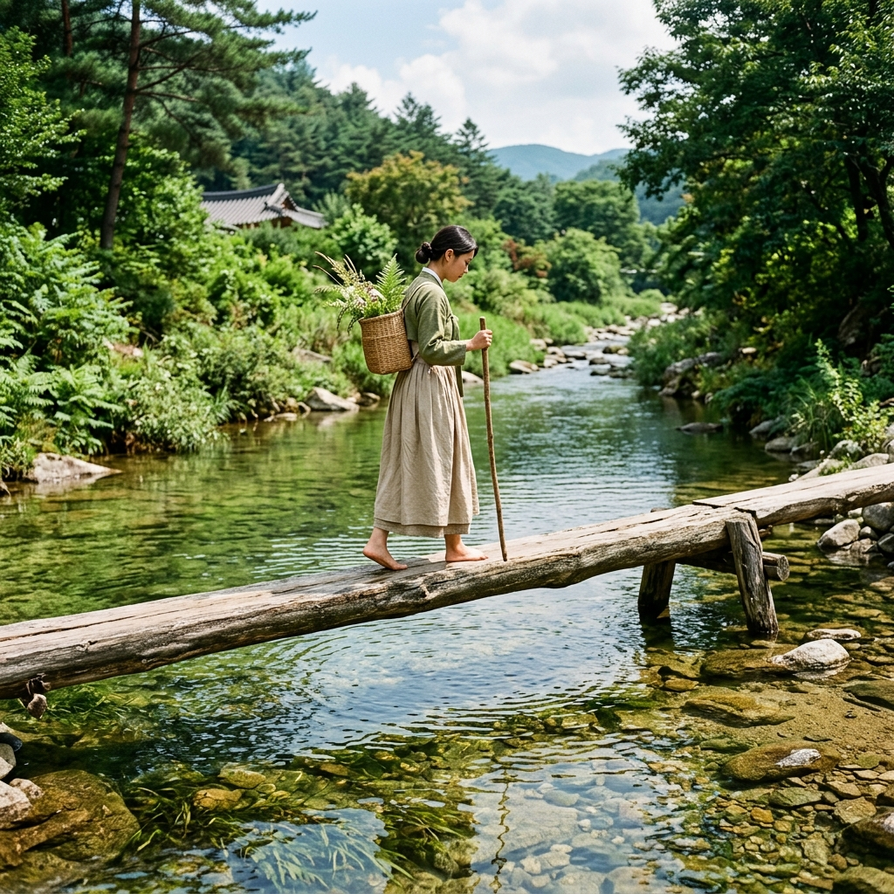
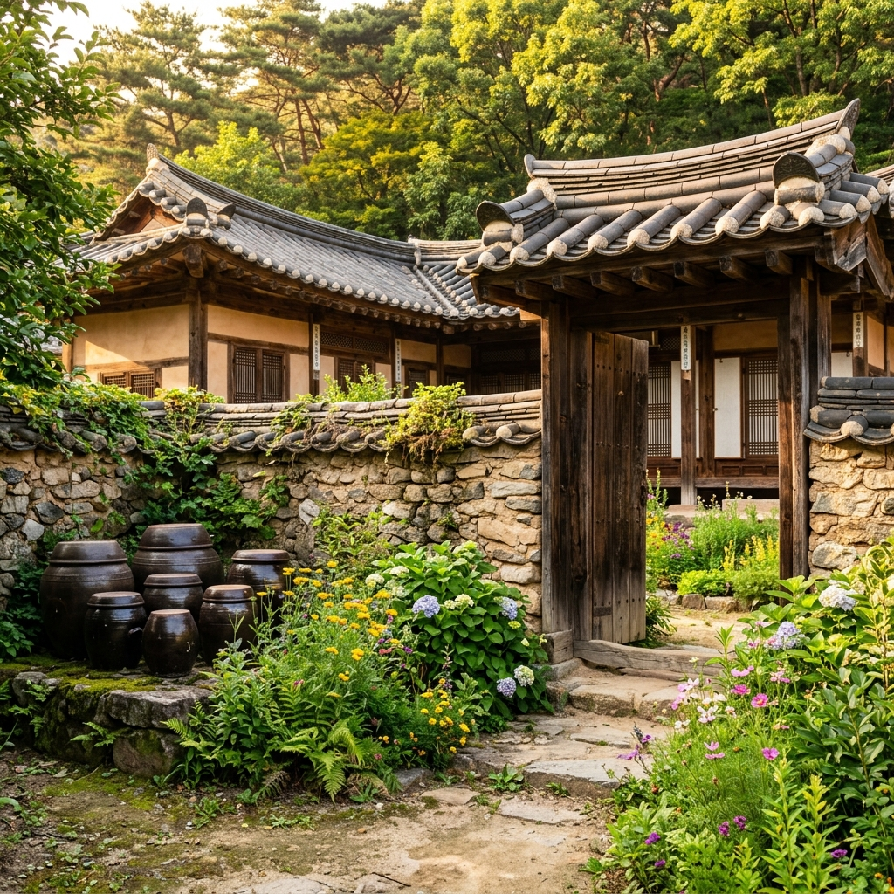

여행 글을 읽다 보면 '숨겨진 곳'이라는 수식어가 너무 흔하게 쓰입니다.
그런데 경상북도 영주시 문수면 수도리의 무섬마을은, 그 표현이 과장 없이 들어맞는 드문 장소였습니다.
지도에서 마을 위치를 짚어 보면 내성천이 말발굽처럼 세 방향에서 마을을 둘러싸고 있다는 사실이 한눈에 보입니다.
바깥에서 마을로 들어올 때도 강을 건너야 하고, 마을 안에서 맞은편으로 넘어가려 해도 또 강을 건너야 했습니다.
말 그대로 '물 위에 떠 있는 섬마을'인 셈입니다.
이렇게 강이 마을을 휘감아 도는 지형을 물돌이(하회·물굽이라고도 부름) 지형이라 합니다.
안동 하회마을이나 예천 회룡포도 같은 계열이지만, 무섬마을은 강폭이 얕고 내성천 특유의 맑은 물빛이 더해져 한결 서정적인 정취가 흘렀습니다.
'무섬'이라는 마을 이름 자체가 '물 위의 섬'을 가리키는 순우리말에서 비롯됐다고 합니다.
옛날에는 진입로에 다리가 아예 없어, 오직 외나무다리 하나가 마을과 바깥을 잇는 통로 역할을 했습니다.
마을이 들어선 시기는 약 360여 년 전 조선 중기로, 반남 박씨와 선성 김씨 두 가문이 집성촌을 일구며 정착한 데서 출발합니다.
선비 정신과 학문을 귀하게 여긴 영남 유학의 가풍을 이은 두 집안은, 마을 곳곳에 규모가 다양한 고택을 남겼습니다.
지금도 조선 시대 한옥 40여 채가 마을에 보존돼 있고, 그중 국가민속문화재로 지정된 건물도 여러 채에 이릅니다.
2013년 국가민속문화재 마을로 지정된 뒤로 무섬마을은 영주를 대표하는 역사 문화 여행지로 자리를 잡았습니다.
다만 관광지로 지나치게 개발되지 않은 덕분에, 지금도 실제 주민이 살며 옛 생활 방식을 지켜 가는 살아 있는 마을이었습니다.
골목을 걷다 보면 장독대에 올려둔 된장 항아리, 처마에 널린 빨래, 텃밭의 상추와 고추 같은 일상의 흔적을 어렵지 않게 마주칩니다.
그 평범한 살림살이가 360년 묵은 돌담과 겹쳐질 때, 비로소 '진짜 마을'에 발을 들였다는 감각이 또렷해졌습니다.
| 구분 | 정보 |
|---|---|
| 내성천 수심 | 여름 평균 허벅지 이하 (수위 변동 있음) |
| 마을 지정 | 국가민속문화재 (2013년) |
| 외나무다리 | 폭 약 30cm, 길이 약 150m, 360년 전통 |
| 안내소 | 10:00~17:00 / 054-636-4700 |
| 개방 시간 | 상시 개방, 연중무휴 |
| 주차 | 무료 (200여 대 가능) |
| 입장료 | 무료 |
| 위치 | 경상북도 영주시 문수면 수도리 |
무섬마을을 찾은 사람이라면 누구든 외나무다리 앞에서 한 박자 망설이게 됩니다.
폭이 약 30cm, 길이가 약 150m에 이르는 이 다리는 통나무를 길게 이어 붙인 것뿐인 듯 보이지만, 막상 그 위에 올라서면 이야기가 완전히 달라졌습니다.
발 아래로는 내성천 맑은 물이 끊임없이 흐르고, 디딜 수 있는 폭은 어른 발 하나가 겨우 들어갈 너비였습니다.
첫발을 올린 순간, 발끝에서 시작된 긴장이 순식간에 온몸으로 번졌습니다.
저절로 무릎이 살짝 굽고, 두 팔이 옆으로 벌어졌으며, 시선은 발끝에 단단히 박혔습니다.
아이들은 비명을 지르고, 어른들도 처음에는 어색하게 팔을 휘저으며 한 걸음씩 조심조심 내디뎠습니다.
이 다리는 마을이 생긴 조선 중기부터 지금까지 약 360년 동안, 주민들이 바깥으로 나가는 유일한 길 노릇을 해 왔습니다.
예전에는 이 길을 건너 장에 갔고, 시집가는 새색시가 가마 대신 이 위를 걸어 시댁으로 향했으며, 서당에 다니던 아이들이 날마다 이 다리를 오갔다고 합니다.
장마나 홍수가 닥치면 다리가 떠내려가 마을 전체가 외부와 단절되기도 했습니다.
그럴 때면 주민들은 배를 띄우거나, 물이 빠질 때까지 기다리는 수밖에 없었습니다.
1979년 콘크리트 다리인 수도교가 놓이면서 외나무다리는 한때 사라질 처지에 몰렸습니다.
하지만 주민들은 이 다리를 단순한 교통로가 아니라 마을의 정체성으로 받아들여 복원하고 지켜 왔습니다.
현재의 외나무다리는 홍수가 지날 때마다 다시 설치하는 방식으로 관리되는데, 여름 장마철에는 수위가 올라 잠시 걷어 냈다가 물이 빠지면 다시 깔아 놓습니다.
이 체험에서 중요한 건 빠르기가 아니었습니다.
한 걸음 한 걸음을 의식하며 천천히 건너는 그 시간 속에서, 평소에는 잊고 지내던 '몸의 감각'이 되살아났습니다.
발바닥은 나무의 결을 읽고, 귀에는 물소리가, 뺨에는 강바람이 닿았습니다.
150m를 건너는 데 보통 5~10분이면 충분하지만, 이 짧은 순간이 여행 전체에서 가장 오래 남는 기억이 될 것입니다.

무섬마을을 제대로 이해하려면 내성천부터 알아야 했습니다.
내성천은 경상북도 봉화군에서 시작해 예천을 지나 낙동강으로 흘러드는 강으로, 총 길이가 약 109km에 달합니다.
이 강을 특별하게 만드는 가장 큰 요소는 바로 모래강이라는 점입니다.
국내 여러 강이 댐과 골재 채취로 모래바닥을 잃어버렸지만, 내성천은 비교적 본래 모습에 가까운 모래강 생태를 간직하고 있습니다.
맑은 여름날 무섬마을에 닿으면, 강가에 길게 펼쳐진 너른 백사장이 가장 먼저 시야에 들어왔습니다.
고운 황금빛 모래가 물에 씻겨 반짝이고, 그 위로 아이들이 뛰노는 풍경은 도시에서는 결코 만날 수 없는 것이었습니다.
물돌이 지형이 만들어지는 이치는 강의 침식 작용과 맞닿아 있습니다.
강물은 굽이를 돌 때 바깥쪽 둑을 더 강하게 깎고, 안쪽에는 흙과 모래를 쌓아 갑니다.
이 작용이 긴 세월 거듭되면 강줄기가 점점 휘어지고, 끝내는 거의 360도 가까이 마을을 감싸는 형태로 굳어집니다.
무섬마을은 내성천이 마을을 거의 완전히 둘러쌀 정도로 굽이치기 때문에, 육지와 마을을 잇는 연결 부분이 아주 좁았습니다.
바로 그 좁은 목 자리에 수도교와 외나무다리가 나란히 놓여 있었습니다.
물돌이 지형은 생태 면에서도 풍성한 환경을 만들어 냅니다.
유속이 느려지는 안쪽 굽이에는 여러 수생 식물이 자라고, 물고기와 새들이 모여듭니다.
무섬마을 앞 내성천에는 멸종위기종 흰수마자를 포함해 다양한 민물고기가 서식한다는 사실이 확인됐습니다.
여름이면 강가 모래밭에서 백로와 왜가리가 먹이를 찾는 장면을 어렵지 않게 볼 수 있었습니다.
강변 갈대밭에서 들려오는 개구리와 새 울음, 강물이 모래를 쓸며 내는 낮은 소리가 어우러져, 자연이 들려주는 최고의 치유 음향이 되었습니다.
이런 지형적·생태적 특수성 덕분에 무섬마을은 한국을 대표하는 생태 경관 마을로 꼽힙니다.
외나무다리를 건너 마을 안으로 들어서는 순간, 본격적인 시간 여행이 시작됐습니다.
입구에 자리한 관광안내소에서 무료 마을 지도를 받을 수 있었습니다.
지도를 펼쳐 보니 40여 채의 고택이 골목망을 따라 빽빽하게 들어차 있다는 것을 알 수 있었습니다.
무섬마을 골목은 거의 포장이 되어 있지 않았습니다.
맨흙 위에 납작한 돌이 박힌 좁은 길을 걷다 보면, 양옆으로 낮은 돌담이 끊임없이 이어졌습니다.
이 돌담들은 따로 공사하거나 보수한 것이 아니라, 수십 년에서 수백 년 동안 그 자리를 지켜 온 것들이었습니다.
이끼와 풀이 함께 자란 돌담 하나하나의 표정에 세월의 결이 새겨져 있었습니다.
마을에서 꼭 들러 봐야 할 핵심 고택은 해우당 고택입니다.
조선 후기에 지어진 이 한옥은 99칸 규모의 큰 저택으로, 지금도 후손들이 관리하며 일부 공간을 개방하고 있습니다.
높은 사랑채 기둥과 너른 대청마루, 안채로 이어지는 중문, 뒤뜰 장독대까지 조선 상류층의 생활 공간이 그대로 남아 있었습니다.
이 외에 만죽재 고택과 김뢰진 가옥도 놓치기 아까운 곳입니다.
만죽재 고택은 선성 김씨 종택으로, 수백 년 묵은 배롱나무가 마당을 지켜 여름이면 붉은 꽃으로 마당을 물들였습니다.
마을을 한 바퀴 도는 기본 코스는 약 1시간 30분 정도 걸렸습니다.
외나무다리 → 마을 입구 → 해우당 고택 → 만죽재 고택 → 마을 뒷길 → 강변 산책 → 다시 외나무다리 순서로 천천히 걸으면 무리가 없었습니다.
골목에서는 주민들의 생활을 배려해 조용히 다니는 것이 기본 예의였습니다.
카메라를 들기 전에 주민이 있는지 살피고, 사람을 찍을 때는 반드시 먼저 동의를 구해야 합니다.
마을 분들은 대체로 방문객에게 친절하지만, 이곳이 관광지이기 이전에 누군가의 삶의 터전임을 잊으면 안 됩니다.
무섬마을은 어느 계절에 가는 게 가장 좋을까요.
봄 벚꽃도 곱고, 가을 단풍도 황홀하며, 겨울 설경에도 운치가 있습니다.
그렇지만 6월은 무섬마을이 가장 생기 있고 풍성하게 빛나는 달이었습니다.
6월의 무섬마을이 남다른 까닭, 그 첫째는 바로 싱그러운 신록에 있었습니다.
고택을 감싼 느티나무와 왕버들, 강변을 따라 늘어선 포플러와 갈대밭이 한 해 중 가장 짙고 선명한 초록으로 물드는 시기가 바로 6월이었습니다.
무더위가 본격화되기 전이라 기온이 알맞고, 장마가 시작되기 전이라 하늘도 맑았습니다.
6월에는 내성천 수위도 적당히 낮아 외나무다리를 무리 없이 건널 수 있었고, 강변 모래밭도 넓게 드러나 있었습니다.
두 번째 이유는 빛입니다.
6월의 해는 한 해 중 가장 길고 높이 떠 있습니다.
오전 6시부터 오후 7시 넘어까지 밝은 햇살이 이어져, 여행자가 빛을 활용할 수 있는 시간이 무척 길었습니다.
특히 오전 7~9시 사이드라이팅 시간대에는 처마 그림자와 돌담 질감이 극적으로 살아나 사진 찍기에 최적의 조건이 만들어졌습니다.
세 번째 이유는 강의 빛깔입니다.
6월 맑은 날의 내성천은 에메랄드빛과 옥색이 섞인 투명한 색을 띠었습니다.
강바닥 모래가 훤히 비치고, 헤엄치는 물고기까지 눈에 들어왔습니다.
외나무다리 위에서 발밑을 내려다보면, 왜 이 마을 이름이 '무섬'이 됐는지 단번에 이해됐습니다.
6월 초순에 가면 마을 뒤편 들판에 보리가 익어 가는 황금빛 물결도 볼 수 있었습니다.
황금 보리밭과 초록 산, 그 사이를 흐르는 옥빛 강물과 기와지붕이 어우러진 풍경은 그 자체로 한 폭의 수채화였습니다.
무섬마을을 영주 여행의 중심에 놓고 일정을 구상한다면, 부석사(浮石寺)를 함께 엮는 것이 정석입니다.
의상대사가 676년에 세운 신라 시대의 옛 절 부석사는, 무섬마을에서 차로 약 20분이면 닿는 곳에 자리합니다.
그중 부석사 무량수전(無量壽殿)은 현존하는 우리나라 목조 건축물 가운데 가장 오래된 축에 들며, 국보 제18호로 지정돼 있습니다.
무량수전 앞마루에 걸터앉아 바라보는 소백산 풍경은, 최순우 전 국립중앙박물관장이 '우리나라에서 가장 아름다운 경치'라 칭한 바로 그 장면입니다.
부석사 입장료는 성인 1,500원으로 부담이 적고, 주차장은 소형차 기준 유료로 운영됩니다.
저는 무섬마을과 부석사를 한데 묶는 1박 2일 코스를 권합니다.
1일 차는 영주에 도착한 뒤 무섬마을부터 둘러봅니다.
오후 늦게 도착해 외나무다리를 건너고 해 질 무렵 강변을 거닌 다음, 마을 고택 숙소에서 하룻밤을 보내는 흐름이었습니다.
2일 차 아침에는 이른 시간 무섬마을 물안개를 감상하고 외나무다리 아침 사진을 담은 뒤 부석사로 옮겨 갑니다.
부석사는 오전 10시 전에 닿으면 사람이 적어 고즈넉한 분위기를 누릴 수 있었습니다.
부석사를 본 뒤에는 영주시내로 나와 영주한식거리에서 점심을 먹고 귀경하는 일정이 가장 매끄러웠습니다.
시간이 더 있다면 부석사 가까이의 선비촌과 소수서원도 함께 추천합니다.
소수서원은 우리나라 최초의 서원으로, 중종 38년(1543년) 풍기군수 주세붕이 세웠습니다.
세계유산에 등재된 한국의 서원 가운데 하나로, 안동 하회마을에서 당일치기로 방문하는 코스로도 활용할 수 있습니다.
무섬마을 여행이 여느 관광지와 다르게 다가온 까닭 중 하나는, 바로 고택 숙박 체험이 가능하다는 점이었습니다.
마을 안 몇몇 고택이 숙박 프로그램을 운영해, 방문객이 조선 시대 한옥에서 하룻밤을 묵어 볼 수 있었습니다.
고택 숙박의 가장 큰 매력은 낮과는 전혀 다른 마을의 얼굴을 마주하는 것이었습니다.
관광객이 모두 빠져나간 저녁의 무섬마을은 완전히 다른 세계였습니다.
낮에는 북적이던 골목이 고요해지고, 강물 소리와 개구리·귀뚜라미 울음만 남았습니다.
도시에서는 볼 수 없는 별이 밤하늘에 쏟아졌고, 마당에 앉아 올려다본 은하수는 어떤 여행지의 야경보다 아름다웠습니다.
일출 전 이른 새벽에 마을을 나서면, 강 위로 피어오르는 물안개를 혼자 독차지하며 감상할 수 있었습니다.
새벽 5~6시의 무섬마을은 온 세상이 조용했고, 물안개에 잠긴 외나무다리는 세상과 끊긴 듯 신비로운 분위기를 자아냈습니다.
숙박은 마을 안 전통 한옥을 활용한 민박 형태로 운영됩니다.
현대식 화장실과 기본 냉난방은 갖춰져 있지만, 에어컨이 없거나 공동 화장실인 경우도 있으니 예약할 때 시설을 꼭 확인해야 했습니다.
요금은 1박 1인 3~6만 원대(성수기에 따라 차이)이고, 일부 숙소는 조식을 제공합니다.
전통 밥상 조식을 내는 숙소에서는 직접 담근 된장찌개와 나물 반찬, 구수한 잡곡밥으로 아침을 맞을 수 있었습니다.
예약은 숙소마다 전화나 네이버 예약으로 진행하며, 성수기인 7~8월에는 최소 2~4주 전 예약이 필수입니다.
6월은 성수기 직전이라 비교적 예약이 수월한 편이었습니다.

무섬마을 자체는 규모가 작은 마을이라, 내부에는 식당이 많지 않았습니다.
관광안내소 근처에 작은 카페와 간단한 간식 가게가 한두 곳 있을 뿐, 끼니를 해결하려면 마을 밖으로 나가야 했습니다.
가장 가까운 식사 장소는 차로 10분 거리의 문수면 소재지, 또는 차로 15~20분 거리의 영주시내였습니다.
영주를 이야기할 때 빼놓을 수 없는 음식이 풍기인삼 요리입니다.
영주 풍기는 고려인삼의 대표 산지로, 인삼 백숙·인삼 전·인삼 막걸리 등 인삼을 활용한 음식이 영주 일대 식당에서 다양하게 나옵니다.
두 번째로 권하고 싶은 것은 영주 한우입니다.
경북 내륙 산간에서 자란 한우는 육질이 단단하고 풍미가 깊어 미식가들에게 좋은 평가를 받습니다.
영주시내 한우거리에는 한우 전문점이 여러 곳 몰려 있어 점심이나 저녁 식사로 안성맞춤이었습니다.
세 번째는 영주 사과입니다.
영주는 경북에서도 일교차가 크고 토질이 좋아 사과 재배로 이름난 고장입니다.
6월은 아직 수확기가 아니지만, 지역 마트에서 저장 사과를 사거나 사과즙·사과잼 같은 가공품을 기념품으로 살 수 있었습니다.
마을 주변 고갯길에는 봄~여름 시즌이면 도로변 직판장이 열려, 지역 농산물을 합리적인 가격에 살 수 있었습니다.
무섬마을 체험 전후로 가볍게 요기하려면 마을 인근 편의점이나 수도리 슈퍼마켓을 이용하면 됩니다.
부석사 방면으로 가는 길목인 부석면 일대에는 산채비빔밥과 두부요리를 전문으로 하는 소박한 시골 식당들이 있었습니다.
산나물과 직접 만든 두부, 된장국이 어우러진 산사 음식풍의 밥상은 무섬마을의 정취와 무척 잘 어울리는 한 끼였습니다.
무섬마을은 경상북도 내륙 깊숙한 곳에 있어, 대중교통보다 자가용 이동이 가장 편했습니다.
다만 대중교통으로 접근하는 방법도 있으니 상황에 맞게 고르면 됩니다.
자가용이라면 내비게이션에 '경북 영주시 문수면 수도리 무섬마을' 또는 '무섬마을 주차장'을 입력하면 됩니다.
서울에서는 중부내륙고속도로 → 중앙고속도로 → 영주 나들목 경유가 가장 빠른 길로, 약 2시간 30분~3시간이 걸렸습니다.
대구에서는 중앙고속도로 북쪽 방향으로 약 1시간 30분이면 닿을 수 있었습니다.
마을 진입 직전 수도교 근처에 넓은 무료 주차장이 있는데, 200여 대를 수용할 수 있었습니다.
주차 요금은 없으며, 차를 댄 뒤 수도교나 외나무다리를 통해 마을로 들어갑니다.
주말과 공휴일 오전 10시~오후 3시 사이에는 주차장이 만차가 되기도 하니, 이른 아침 방문을 권합니다.
대중교통이라면 기차와 버스를 조합해야 했습니다.
서울 청량리역에서 영주역까지는 무궁화호나 ITX-새마을을 탈 수 있고, 소요 시간은 약 2시간~2시간 30분이었습니다.
영주역에서 무섬마을(수도리)로 가는 직행 버스는 제한적이라, 영주시내에서 문수면 방면 농어촌버스를 타거나 택시를 이용하는 편이 현실적이었습니다.
영주역에서 무섬마을까지 택시 요금은 약 1만 5천~2만 원 수준이었습니다.
렌터카를 쓰면 대중교통 불편 없이 영주 전역을 자유롭게 다닐 수 있어 추천합니다.
영주역 주변에 렌터카 업체가 있으니, 기차 여행과 렌터카를 결합하는 방법도 좋은 선택이었습니다.
| 참고 | 소요 시간 | 서울 출발 경로 | 수단 |
|---|---|---|---|
| 주차 무료, 200여 대 | 약 2시간 30분~3시간 | 중부내륙·중앙고속도로 → 영주 나들목 | 자가용 |
| 택시 1.5~2만 원 | 약 2시간 30분+택시 20분 | 청량리역 → 영주역 (무궁화/ITX) | 기차+택시 |
| 영주역 인근 렌터카 업체 | 약 2시간 30분+이동 | 청량리역 → 영주역 → 렌터카 | 기차+렌터카 |
| 농어촌버스 편수 적음 | 약 3시간+버스 환승 | 동서울·강남터미널 → 영주버스터미널 | 고속버스+버스 |
사진을 좋아하는 여행자에게 무섬마을은 그야말로 보물창고 같은 곳이었습니다.
어느 방향을 찍어도 그림이 되지만, 알고 찍으면 훨씬 극적인 결과를 얻을 수 있었습니다.
첫 번째 명당은 외나무다리를 옆에서 바라볼 수 있는 강변 자리입니다.
주차장에서 강변으로 내려가 남쪽으로 약 50m 걸으면, 외나무다리 전체를 정측면에서 담을 수 있는 지점이 나왔습니다.
이곳에서 다리 위에 사람이 선 장면을 찍으면 강·다리·사람이 균형 잡힌 구도가 만들어졌습니다.
아침 안개가 깔린 날이라면 몽환적인 분위기까지 더해졌습니다.
두 번째 명당으로는 해우당 고택 정문 바로 앞을 꼽을 수 있습니다.
오전 10시 전후에 정문 앞에 서면 솟을대문과 돌담이 빛을 받아 입체감이 살아났습니다.
문 안쪽으로 마당과 사랑채가 들여다보이는 구도는 한국 전통 건축의 깊이를 잘 드러내 주었습니다.
세 번째 명당으로 추천하는 곳은 마을 뒤쪽으로 솟은 언덕이었습니다.
골목을 따라 뒤편 구릉으로 올라가면 마을 전체와 내성천, 건너편 들판을 함께 담을 수 있는 지점이 있었습니다.
기와지붕이 겹겹이 펼쳐지고 그 뒤로 강물이 감싸는 풍경은 무섬마을의 정체성을 가장 잘 표현하는 구도였습니다.
드론 촬영을 계획한다면 반드시 사전 확인이 필요합니다.
국가민속문화재 마을 인근은 드론 비행 제한 구역일 수 있으므로, 영주시청이나 문화재청에 미리 문의해 허가를 받아야 합니다.
허가 없이 드론을 띄우면 문화재보호법에 저촉되어 처벌 대상이 될 수 있습니다.
촬영 도중 주민의 일상 공간에 무단으로 들어가거나 담장 위로 카메라를 들이대는 행위는 삼가야 합니다.
주민에 대한 배려가 곧 무섬마을의 아름다움을 오래 지키는 기본 예의였습니다.